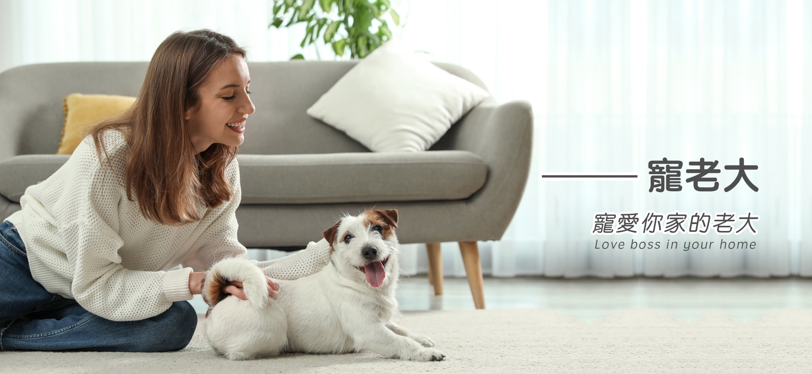

<!-- pet-medical-tittle -->
<div class="pet-24hr bg-img position-relative">
  <!-- 醫院內頁連結 -->
  <div class="position-sm-absolute top-30 start-0 w-100">
    <ul
      class="shadow   position-relative hospital-list overflow-hidden black-hover  bg-secondary opacity-90 fs-lg-6 w-lg-10   w-xl-8 w-sm-20   w-md-15  text-center  d-flex flex-sm-column">
      <li class="hospital-list-hover w-100 "><a class="text-primary pt-3 pb-3" href="pet-medical.html">醫療機構</a>
      </li>
      <li class="hospital-list-hover w-100 "><a class="text-primary pt-3 pb-3" href="pet-medical-24hr.html">24HR急診</a>
      </li>
      <li class="hospital-list-hover w-100 "><a class="text-primary pt-3 pb-3" href="pet-medical-shop.html">毛孩保健</a>
      </li>
    </ul>
  </div>
  <!-- 標題定位 -->
  <div class="position-relative  ">
    <div class="tittle-border-dc d-none d-lg-block"></div>
    <div class="pet-assess">
      <div class="container justify-content-center  ">
        <div class=" d-flex align-items-center justify-content-center justify-content-md-start  mt-6 mb-3 mb-md-0"
          data-aos="fade-right" data-aos-duration="1000">
          
          <h1 class="fw-bold mb-0  fs-2 ms-6 ">毛孩保健</h1>
        </div>
      </div>
    </div>
  </div>
  
</div>